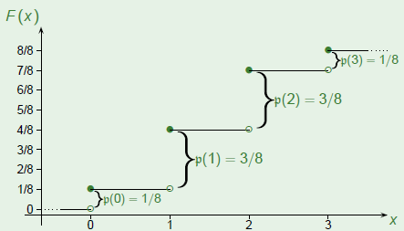
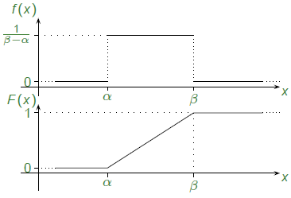
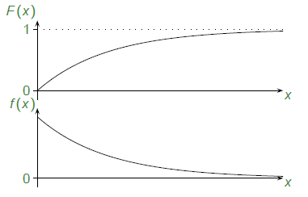
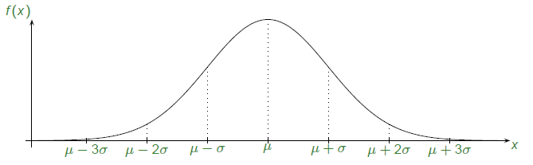

1 Distribution function
1.1 Cumulative distribution function
The cumulative distribution function (CDF) of a random variable X is given by
F : \mathbb{R} \rightarrow [0,1], \;\;\;\; x \rightarrow F(x) = p\{ X \le x\}
Notice that the function is well defined for any random variable.
CDF is defined as capital F or sometimes as capital F_XRemark: Ther distribution function contains all relevant information about the distribution of our random variable. E.g., for any fixed a<b
\mathsf{P}\{a<X\leq b\}=\mathsf{P}\{X\leq b\}-\mathsf{P}\{X\leq a\}=F(b)-\mathsf{P}(a)
\mathsf{P}\{a\leq X<b\}=\mathsf{P}\{a<X\leq b\} -\mathsf{P}\{X\leq b\} +\mathsf{P}\{X\leq a\}Probability at jump is given by difference between jump points, e.g.

p(X = 2) = \frac{7}{8} - \frac{4}{8} =\frac{3}{8}A random variable with piecewise constant distribution function is called discrete. It’s mass function values equal to the jump size in the distribution function.
Proposition
A cumulative distribution function F- Is non-decreasing
- has limit \lim_{x \rightarrow - \infty} F(X) =0 on the left;
- has limit \lim_{x \rightarrow + \infty} F(X) =1 on the right;
- Is continuous form the right.
Any function F with the above properties is a cumulative distribution function. There is a sample space and a random variable on it that realizes this distribution function.
One Use case of CDF
Suppose we have a tool that can generate only uniform random variable.
But we want to generate the data which follows a specific probability distribution f whose CDF is F_X.
To achieve thais we generate random number using uniform distribution in range [0,1], say a. Now look at CDF F_X and find A such that F_X(S)=a
Output A.
The output will be distributed as per f
2 Density function
- Suppose that a random variable has it’s distribution function in the form of
\displaystyle F(a) = \int _{- \infty}^a f(X) dX, \;\;\;\; \forall a \in \mathbb{R}
with a function f \ge 0. Then the distribution is called (absolutely) continuous, and f is the probability density function (pdf). - Proposition
A probability density function f- Is non-negative
- Has total integral \displaystyle \int _{- \infty} ^ \infty f(x) dx =1
- Any function f with the above properties is a probability density function. There is a sample space and a continuous random variable on it that realizes this density.
2.1 Properties of the density function
- Proposition
For any subset B \subseteq \mathbb{R},
\displaystyle P\{X \in B \} = \int _B f(x) dx - Corollary
Indeed, for a continuous random variable X,
\displaystyle P\{X \in a \} = \int _{\{a\}} f(x) dx = 0 \;\;\;\;\; \forall a \in \mathbb{R} - Corollary
For a small \varepsilon ,
\displaystyle P\{X \in (a,a+\varepsilon] \} = \int _a ^{a + \varepsilon} f(x) dx \simeq f(a) \cdot \varepsilon - There is no particular value that X can take on with positive chance. We can only talk about intervals, and density tells us the likelihood that X is around a point a.
- To get to the density from an absolutely continuous distribution function,
\displaystyle f(a) = \frac{dF(a)}{da}\;\;\;\; a \in \mathbb{R}
3 Expectation, Variance
- The way of defining the expectation will be no surprise for anyone (c.f the discrete case):
- Definition:
The expected value of a continuous random variable X is defined by
\displaystyle EX = \int_{- \infty}^ \infty X \cdot f(X)dX,
if the integral exists. - Proposition
Let X be a continuous random variable, and g an \mathbb{R } \rightarrow \mathbb{R } function then
\displaystyle Eg(X)= \int _{- \infty} ^{\infty} g(X) \cdot f(X) dX, \;\;\;\;\; if exists. - We can define
Moments:
\displaystyle EX^n= \int _{- \infty} ^{\infty} X^n \cdot f(X) dX, Absolute moments:
\displaystyle E|X|^n= \int _{- \infty} ^{\infty} |X| ^n \cdot f(X) dX,
variance \text{Var}X = E(X-EX)^2=EX^2-(EX)^2 and standard deviation \text{SD}X= \sqrt{\text{Var}X } as in the discrete case. These enjoy the same properties as before.
4 Uniform
- Definition
Fix \alpha < \beta reals. We say that X has the uniform distribution over the interval (\alpha , \beta ), in short, X \sim U(\alpha , \beta), if it’s density is given by
f(X) = \left\lbrace \begin{array}{c c} \displaystyle \frac{1}{\beta -\alpha} & \text{if } X \in (\alpha,\beta),\\ 0, & \text{otherwise} \end{array}\right . - Notice that this is exactly the value of the constant that makes this a density.
- Integrating the density
F(X) = \left\lbrace \begin{array}{l l} 0,&\text{if } X \le \alpha, \\ \displaystyle \frac{X-\alpha}{\beta -\alpha}, & \text{if } X \in (\alpha,\beta),\\ 1, & \text{otherwise} \end{array}\right .
 - Remarks:
If X \sim U (\alpha , \beta), and \alpha < a <b < \beta then
\displaystyle P\{a < X \le b\} = \int_a^b f(X)dX=\frac{b-a}{\beta - \alpha }
Probabilities are computed by proportions of lengths.
4.1 Expectation, Variance of uniform
- For X \sim U(\alpha , \beta ),
\boxed{ \displaystyle EX =\frac{\alpha + \beta }{2}, \;\;\;\; \text{Var}X = \frac{(\beta - \alpha)^2}{12}} - proof of EX
\displaystyle EX= \int_{- \infty}^{\infty} Xf(X)dX= \int_{\alpha}^{\beta} \frac{X}{\beta - \alpha}dX=\frac{\frac{\beta ^2}{2} - \frac{\alpha ^2}{2}}{\beta - \alpha}=\frac{\alpha + \beta}{2} - proof of \text{Var}X
First find EX^2
\displaystyle EX^2= \int_{- \infty}^{\infty} X^2f(X)dX= \int_{\alpha}^{\beta} \frac{X^2}{\beta - \alpha}dX=\frac{\frac{\beta ^3}{3} - \frac{\alpha ^3}{3}}{3(\beta - \alpha)}=\frac{\alpha^2+\alpha \beta + \beta^2}{3}
\displaystyle \text{Var}X = EX^2-(EX)^2 = \frac{\alpha^2+\alpha \beta + \beta^2}{3}- \frac{(\alpha + \beta)^2}{4}=\frac{ \beta^2 -2\alpha \beta + \alpha^2}{12}
\displaystyle \text{Var}X = EX^2-(EX)^2 = \frac{(\beta-\alpha )^2}{12}
5 Exponential
The Exponential is a very special distribution because of its memoryless property. It is often considered as a waiting time, and is widely used in the theory of stochastic processes.
Definition
Fix a positive parameter \lambda. X is said to have the Exponential distribution with parameter \lambda or, in short, X \sim \text{Exp}(\lambda ), if its density is given by
\displaystyle f(x) = \left\lbrace \begin{array}{l l} 0, & \text{if }x\le 0 \\ \lambda e^{-\lambda x}, & \text{if }x\ge 0 \\ \end{array}\right .Integration of density exponential density function
\displaystyle F(X) = \int _{-\infty}^0 f(z)dz = \int _{0}^x f(z)dz+ \int _{0}^x f(z)dz
\displaystyle F(X) = \int _{-\infty}^0 0dz + \int _{0}^x \lambda e^{-\lambda z} dz
\displaystyle F(X) =\int _{0}^x \lambda e^{-\lambda z} = \lambda \frac{e^{- \lambda z}}{- \lambda} \bigg|_{0}^x = 1-e^{-\lambda x}
\displaystyle F(x) = \begin{cases} 0, & \text{if }x\le 0 \\ 1-e^{-\lambda x}, & \text{if }x\ge 0 \\ \end{cases}

5.1 Expectation, Variance of Exponential
For X \sim \text{Exp}(\alpha , \beta ),
\boxed{ \displaystyle EX =\frac{1 }{\lambda}, \;\;\;\; \text{Var}X = \frac{1}{\lambda^2}}Proof of EX
\displaystyle EX = \int _0 ^\infty X \lambda e^{-\lambda X}dX
Tips integration by parts:
d(uv) = udv+vdu
udv = d(uv) - vdu
\int udv = uv - \int vdu
In our case u=X \;\;\; v=-e^{-\lambda X} \Rightarrow dv= \lambda e^{-\lambda X}
\displaystyle \int _0 ^\infty udv = -\left(X\cdot e^{-\lambda X} \right)\big| _0 ^\infty - \int _0 ^\infty \left( -e^{-\lambda X}\right) dX
\displaystyle \int _0 ^\infty udv = 0- \frac{e^{-\lambda X}}{\lambda} \Bigg|_0 ^\infty = \frac{1}{\lambda}
\displaystyle EX = \frac{1}{\lambda}Proof of \text{Var}X
First we find E(X^2)
\displaystyle E(X^2) = \int _0 ^\infty X^2 \lambda e^{-\lambda X}dX
In this case u=X^2 \;\;\; v=-e^{-\lambda X} \Rightarrow dv= \lambda e^{-\lambda X}
\displaystyle \int _0 ^\infty udv = -\left(X^2\cdot e^{-\lambda X} \right)\big| _0 ^\infty - 2\int _0 ^\infty \left( -e^{-\lambda X}\right) XdX
\displaystyle \int _0 ^\infty udv = 0+ 2\int _0 ^\infty \left( e^{-\lambda X}\right) XdX
\displaystyle \int _0 ^\infty udv = 0+ 2\frac{1}{\lambda} \int _0 ^\infty \lambda\left( e^{-\lambda X}\right) XdX
\displaystyle \int _0 ^\infty udv = 0+ \frac{2}{\lambda}\underbrace{\int _0 ^\infty \lambda \left( e^{-\lambda X}\right) XdX}_{\text{This is same as }EX=\frac{1}{\lambda}}
\displaystyle \int _0 ^\infty udv =\frac{2}{\lambda^2}=E(X^2)
Now,
\displaystyle \text{Var}X = E(X^2)-(EX)^2=\frac{2}{\lambda^2} - \left(\frac{1}{\lambda}\right)^2=\frac{1}{\lambda^2}Thinking about X as a waiting time, we now see that \lambda describes how fast the event we wait for, happens. Therefore \lambda is also called the rate of the exponential waiting time.
5.2 The memoryless property
- The exponential is the only continuous non-negative memory less distribution. That is, the only distribution with X \ge 0 and P\{X > t + s \mid X > t\} = P\{X > s\} \;\;\;\;\;(\forall\; t,\;\; s \ge 0)
- Suppose we have waited for time t. The chance of waiting an additional time s is the same as if we would start waiting anew. The distribution does not remember its past.
- Proof
\displaystyle P \left\{ X > t + s \mid X>t \right\}= \frac {P\left\{ X > t + s \right\} \cap P\left\{X>t \right\}}{P\left\{X>t \right\}}
if X > t+s then X is also greater than t
\displaystyle P \left\{ X \ge t + s \mid X>t \right\}= \frac {P\left\{ X \ge t + s \right\} }{P\left\{X>t \right\}}
\displaystyle P \left\{ X \ge t + s \mid X>t \right\}= \frac {\lambda e^{-\lambda (t+s)} }{\lambda e^{-\lambda t}}= e^{-\lambda s}=P \left\{ X>s \right\}
6 Normal
- Definition
Let \mu \in \mathbb{R}, \sigma > 0 be ral parameters, X has the normal distribution with parameters \mu and \sigma^2 or in short X \sim \mathcal{N}(\mu,\sigma ^2), if it’s density is given by
\displaystyle f(x)=\frac{1}{\sqrt{2\pi}\cdot\sigma}\cdot e^{-\frac{1}{2} \left(\frac{X-\mu}{\sigma}\right)^2}\;\;\;\;X\in \mathbb{R}
 - The case \mu =0, \sigma^2=1 is called standard normal distribution X \sim \mathcal{N}(0,1), Its density is denoted by \phi and it’s distribution is denoted by \Phi
\displaystyle \phi(x)=\frac{1}{\sqrt{2\pi}\cdot\sigma}\cdot e^{-\frac{ X^2}{2}}
\displaystyle \Phi(x)=\int_{-\infty }^X \frac{1}{\sqrt{2\pi}\cdot\sigma}\cdot e^{-\frac{ y^2}{2}}dy\;\;\;\;X\in \mathbb{R} - Remarks : The standard normal distribution \phi(x)=\int_{-\infty }^X \frac{1}{\sqrt{2\pi}\cdot\sigma}\cdot e^{-\frac{ y^2}{2}}dy has no closed from, its values wil be looked up in tables.
6.1 Symmetry
- For any z \in \mathbb{R}, \;\;\Phi (-Z ) = 1- \Phi(Z)
Proof:
The standard normal distribution is symmetric: if X \sim \mathcal{N}(0,1) and also -X \sim \mathcal{N}(0,1), Therefore
\Phi(-Z)=P\{ X<-Z\} = P\{-X > Z \} = P\{ X >Z\} = 1 - \Phi(Z)
6.2 Linear transformations
Let X \sim \mathcal{N}(\mu,\sigma ^2) and \alpha , \beta \in \mathbb{R}, Then \alpha X + \beta \sim \mathcal{N}(\alpha \mu + \beta , \alpha^2 \sigma^2)
proof:
we prove for positive \alpha, for negative it’s similar. Start with the distribution function Y = \alpha X +\beta
\displaystyle F_Y(y)=P\{ Y <y\} = P\{ \alpha X + \beta <y\} = P\left\{ X < \frac{y-\beta}{\alpha}\right\}
\displaystyle F_Y(y)= P\left\{ X < \frac{y-\beta}{\alpha}\right\}=F_X\left(\frac{y-\beta}{\alpha}\right)
\displaystyle f_y \left(y\right)=\frac{d}{\textrm{d}y}F_y \left(y\right)=\frac{d}{\textrm{d}y}F_X \left(\frac{y-\beta }{\alpha }\right)=f_X \left(\frac{y-\beta }{\alpha }\right)\frac{1}{\alpha }
\displaystyle f_y \left(y\right)=\frac{1}{\sqrt{2\pi }\sigma }\mathrm{Exp}\left(-\frac{1}{2}{\left(\frac{\left(\frac{y-\beta }{\alpha }\right)-\mu }{\sigma }\right)}^2 \right)\frac{1}{\alpha }
\displaystyle f_y \left(y\right)=\frac{1}{\sqrt{2\pi }\sigma }\mathrm{Exp}\left(-\frac{1}{2}{\left(\frac{y-\beta -\mu \alpha }{\sigma \alpha \;}\right)}^2 \right)\frac{1}{\alpha }
\displaystyle f_y \left(y\right)=\frac{1}{\sqrt{2\pi }\sigma }\mathrm{Exp}\left(-\frac{\left(y-\beta -\mu \alpha \right)^2 }{2{\left(\sigma \alpha \right)}^2 \;}\right)\frac{1}{\alpha }
\displaystyle f_y \left(y\right)=\frac{1}{\sqrt{2\pi }\sigma \alpha }\mathrm{Exp}\left(-\frac{\left(y-\left(\mu \alpha +\beta \right)\right)^2 }{2{\left(\sigma \alpha \right)}^2 \;}\right)
which implies the statement Y \sim \mathcal{N}(\alpha \mu + \beta , \alpha^2 \sigma^2)If X \sim \mathcal{N}(\mu, \sigma ^2), then its standardized version \frac{X-\mu}{\sigma} \sim \mathcal{N}(0, 1)
Just use \alpha = \frac{1}{\sigma} and \beta = -\frac{\mu}{\sigma}If X \sim \mathcal{N}(0, 1) is standard normal, then its mean is 0 and its variance is 1.
Proof:
That the mean is zero follows from symmetry. For the variance we need to calculate
\displaystyle EX^{2}=\int_{-\infty}^{\infty}\frac{x^{2}}{\sqrt{2\pi}}\cdot\mathrm{e}^{-x^{2}/2}\,\mathrm{d}x
using intergration by parts. TODO : complete the integrationIf X \sim \mathcal{N}(\mu,\sigma ^2) then its mean is \mu and its variance is \sigma ^2
Proof:
\displaystyle \mathrm{EX}=\sigma \cdot E\left(\frac{X-\mu }{\sigma }\right)+\mu =0+\mu =\mu
\displaystyle \mathrm{VarX}=\sigma^2 \mathrm{Var}\left(\frac{X-\mu }{\sigma }\right)=\sigma^2 \cdot 1=\sigma^2
X \sim \mathcal{N}(\mu,\sigma ^2) is also said to be normal distribution with mean \mu and variance \sigma^2
6.3 Why normal
- Theorem (DeMoivre-Laplace)
Fix p and let X_n \sim \text{Binom}(n,p). Then for every fixed a<b reals,
\displaystyle \lim_{n\to \infty } P\left\lbrace a<\frac{X_n -\mathrm{np}}{\sqrt{\mathrm{np}\left(1-\mathrm{np}\right)}}\le b\right\rbrace =\Phi \left(b\right)-\Phi \left(a\right)
That is, take X_n \sim \text{Binom}(n,p) with large n, fixed (not small) p. then \frac{X_n -\mathrm{np}}{\sqrt{\mathrm{np}\left(1-\mathrm{np}\right)}} is approximately \mathcal{N}(0,1) distributed.
This will be a special case in the Central Limit Theorem, In fact, Normal will appear in many similar scenarios. Measured quantities, heights or people, length of these lectures, etc.
\tiny {\textcolor{#808080}{\boxed{\text{Reference: Dr. Subruk, IIT Hyderabad }}}}